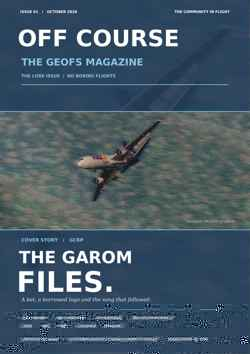

Community stories
Events, virtual airlines, organisations, server history and the tiny Discord moments that somehow turn into community lore.
A GEOFS MEDIA GROUP LTD. PUBLICATION
OFF COURSE is a community-made GeoFS magazine about planes, virtual airlines, screenshots, photography, server history, ridiculous investigations, lore and the kind of events that somehow become important because somebody saved the Discord message.

ISSUE 01 / OUT NOW →WHAT IS OFF COURSE?
We started with aircraft. Then the airlines started arguing, somebody made lore, somebody else found penguins, and apparently the correct response was to make a magazine.
Events, virtual airlines, organisations, server history and the tiny Discord moments that somehow turn into community lore.
Real aircraft, GeoFS flying, airports, approaches, photography and whatever machine has taken over the editor's brain this week.
OFF COURSE looks like a magazine. This does not mean it has agreed to behave like one. Expect investigations nobody requested and jokes that survived editing.
Created by GASA with Canada Driven Studios, with Issue 01 sponsored by UCG. The stories come from the weird little world around GeoFS.
GEOFS MEDIA GROUP LTD.
GeoFS Media Group Ltd. brings together two independent publications covering different sides of the GeoFS community, while sharing reporting, sources, graphics and major-story coverage.
The GeoFS Magazine. Long-form monthly issues covering community stories, aviation, lore, investigations, photography, virtual airlines and whatever else somehow becomes important.
Independent weekly and biweekly reporting focused on GeoFS Military Roleplay, fast-moving events, announcements and current GMRP news.
LATEST RELEASE
79 pages. GCRP, Cubic, GASA, MRP, EMS, penguins, add-ons, real aviation, Madeira, photography and enough side quests to make the contents page nervous.
THE LIBRARY
The library is the permanent shelf for OFF COURSE. New editions will appear there with their covers, release dates and embedded page-turning readers.
Browse all issues